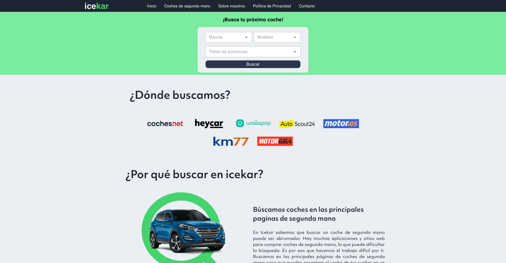

icekar
icekar is a car ads search tool that collects and displays the results of the most important websites in the sector. With our platform, you can save time and effort in your search for your next car. Our search engine allows you to access a wide selection of used cars quickly and easily, with the convenience of having everything in one place. Don't waste any more time browsing through different used car websites, try icekar and find the car you need today.